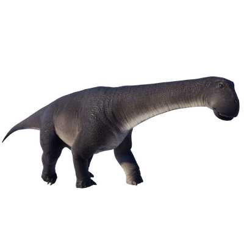

Useful Website
Nigersaurus is one of the smallest sauropods, at around 14m in length and four tonnes in weight. Its name refers to the location of its discovery, Niger in Africa, and this genus is notable for its teeth – its jaws contain over 500 long, thin teeth that it uses to tear plants from the ground. These teeth are replaced more often than any other genus of dinosaur, around every two weeks.
